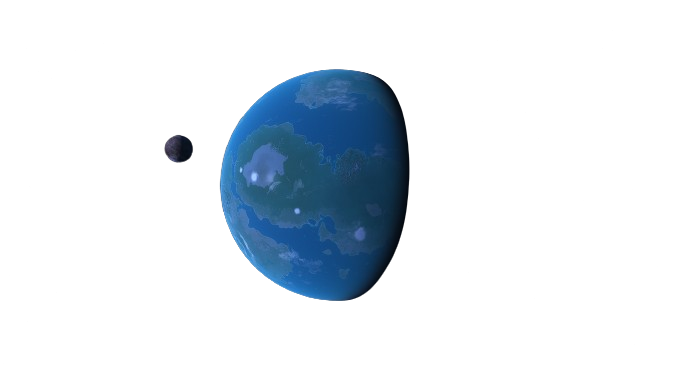

DISTANT WORLDS

Distant Worlds, Story set in 23th Century in the Future, Humanity have expanded across Solar System, Stellar Neighborhood and Through Bridges across galaxies. Republics Form Alliances or Declare Wars. Colonies fight for Independence against oppression. Humanity becoming Member of Galactic Alliance against Stellar Empire. Humanity gaining respect from galactic neighborhood civilisations and become member of Bridge Trade
In Distant Worlds you will encounter
Mostly Hard Science
Theoretical Concepts of Technologies realised
Fictional Extrasolar civilisations and technologies
Detailed Ship Engineerings
Realistic Exobiology, Planetology, Geology
Cosmic Stories and Characters
mMONTAGEe's Workshop
Worldbuilding Contributors: Varaxia
Web Contributors: Gerardagh